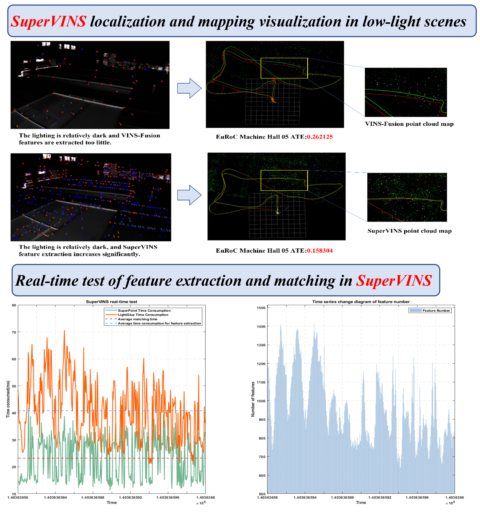
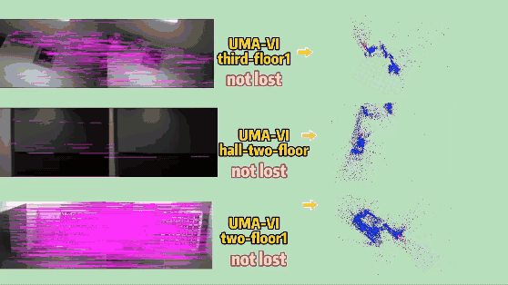
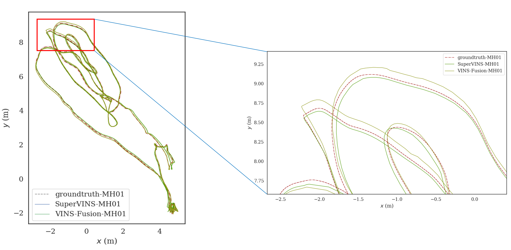
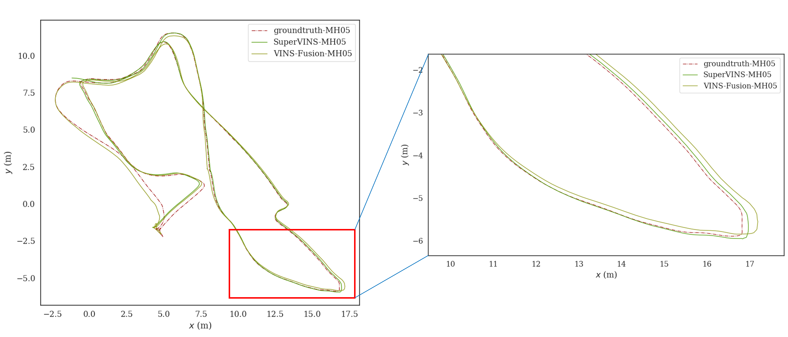
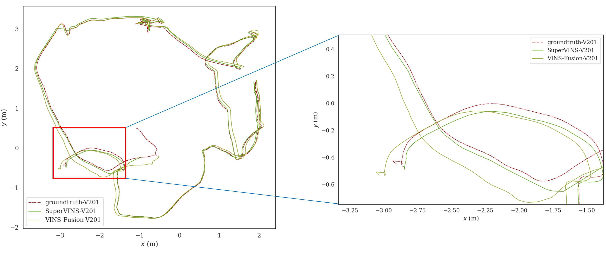

SuperPoint extraction
Deep feature points improve tracking stability when illumination and texture are unreliable.
IEEE Sensors Journal
A Real-Time Visual-Inertial SLAM Framework for Challenging Imaging Conditions
1 Wuhan University 2 China University of Mining and Technology * Corresponding author
Framework
Method
SuperVINS enhances VINS-Fusion with neural feature extraction, learned feature association, RANSAC-based match refinement, and environment-specific bag-of-words loop closure.
Deep feature points improve tracking stability when illumination and texture are unreliable.
Learned association strengthens the front end before geometric verification.
Retrained SuperPoint bag-of-words models support long-term consistency.
The system targets online localization and mapping with GPU inference support.

Visualization
The experiment runs on Ubuntu 20.04 with an RTX 2060 GPU, CUDA 11.7, CUDNN 8.9.6, ONNX Runtime 1.16.3, and ROS Noetic.

Paper
There is an increasing emphasis on achieving high accuracy and robustness in SLAM systems. The traditional visual-inertial SLAM system often struggles with stability under low-light or dynamic illumination, leading to the potential loss of trajectory tracking. High accuracy and robustness are crucial for ensuring the long-term stability and reliable localization performance of SLAM systems. To address the challenges of improving robustness and accuracy in visual-inertial SLAM, this paper proposes SuperVINS, a real-time visual-inertial SLAM framework designed for challenging imaging conditions. In contrast to geometric modeling, deep learning-based features are capable of fully leveraging the implicit information present in images, which is often not captured by geometric features. Therefore, SuperVINS, developed as an enhancement of VINS-Fusion, integrates the deep learning neural network model SuperPoint for feature point extraction and loop closure detection. At the same time, a deep learning neural network LightGlue model for associating feature points is integrated into front-end feature matching. We employed the RANSAC algorithm for matching enhancement to improve robustness against outliers. Additionally, SuperVINS enables flexibly integrated environment-specific SuperPoint bag-of-words models for improved loop closure detection. The system enables real-time localization and mapping. Experimental validation on the well-known EuRoC and UMA-VI datasets demonstrates that SuperVINS achieves comparable accuracy and robustness to other state-of-the-art visual-inertial SLAM systems, particularly in the most challenging sequences. This paper analyzes the advantages of SuperVINS in terms of accuracy, real-time performance, and robustness. To foster knowledge exchange in the field, we have publicly released the code associated with this paper.
Evaluation
ATE Comparison
| Dataset | OKVIS | VINS-Mono Noloop |
VINS-Mono Loop |
VINS-Fusion Noloop |
VINS-Fusion Loop |
SuperVINS |
|---|---|---|---|---|---|---|
| MH01 | 0.3300 | 0.1556 | 0.0868 | 0.1377 | 0.0911 | 0.0867 |
| MH02 | 0.3700 | 0.1780 | 0.1083 | 0.1002 | 0.0457 | 0.0970 |
| MH03 | 0.2500 | 0.1950 | 0.0658 | 0.1203 | 0.0919 | 0.1806 |
| MH04 | 0.2700 | 0.3470 | 0.2047 | 0.2836 | 0.1307 | 0.1708 |
| MH05 | 0.3900 | 0.3020 | 0.1421 | 0.1587 | 0.2621 | 0.1583 |
| V101 | 0.0940 | 0.0889 | 0.0484 | 0.1569 | 0.1536 | 0.2010 |
| V102 | 0.1400 | 0.1105 | 0.0631 | 0.1222 | 0.2192 | 0.1160 |
| V103 | 0.2100 | 0.1875 | 0.2012 | 0.1287 | 0.1700 | 0.2214 |
| V201 | 0.0900 | 0.0863 | 0.0672 | 0.1207 | 0.1233 | 0.0611 |
| V202 | 0.1700 | 0.1580 | 0.1588 | -- | -- | 0.1003 |
| V203 | 0.2300 | 0.2775 | 0.2475 | 0.2881 | 0.1926 | 0.1687 |
Bold marks the best result; underlined marks the second-best result.
Robustness Comparison
| UMA-VI | VINS-Fusion | SuperVINS | ||
|---|---|---|---|---|
| Tracking | ATE | Tracking | ATE | |
| conference3 | X | -- | X | -- |
| fancy1 | Y | 0.871 | Y | 0.431 |
| fancy2 | X | -- | Y | 0.517 |
| two-floor1 | X | -- | Y | 0.810 |
| two-floor2 | X | -- | Y | 0.168 |
| hall1-eng | X | -- | X | -- |
| hall1-rev | X | -- | Y | 0.071 |
| hall1-two-floor | X | -- | Y | 0.645 |
| third-floor1 | X | -- | Y | 0.125 |
| third-floor-eng | Y | 0.100 | X | -- |
Runtime Evaluation
| Dataset | Feature Extraction | Feature Matching | Backend Optimization | Loop Frame Detection | ||||
|---|---|---|---|---|---|---|---|---|
| Mean | Std | Mean | Std | Mean | Std | Mean | Std | |
| EuRoC | ||||||||
| MH01 | 0.0274 | 0.0085 | 0.0537 | 0.0162 | 0.1739 | 0.0859 | 0.0082 | 0.0034 |
| MH02 | 0.0273 | 0.0085 | 0.0572 | 0.0164 | 0.1909 | 0.0890 | 0.0105 | 0.0043 |
| MH03 | 0.0279 | 0.0084 | 0.0534 | 0.0164 | 0.1807 | 0.0905 | 0.0083 | 0.0035 |
| MH04 | 0.0271 | 0.0083 | 0.0493 | 0.0164 | 0.1581 | 0.0964 | 0.0078 | 0.0034 |
| MH05 | 0.0264 | 0.0085 | 0.0466 | 0.0156 | 0.1450 | 0.0926 | 0.0076 | 0.0032 |
| UMA-VI | ||||||||
| hall1-rev | 0.0235 | 0.0089 | 0.0252 | 0.0091 | 0.0719 | 0.0609 | 0.0022 | 0.0008 |
| hall1-two-floor | 0.0216 | 0.0090 | 0.0194 | 0.0089 | 0.0521 | 0.0350 | 0.0017 | 0.0006 |
| third-floor1 | 0.0235 | 0.0094 | 0.0377 | 0.0161 | 0.1118 | 0.0720 | 0.0051 | 0.0016 |
| two-floor1 | 0.0240 | 0.0088 | 0.0380 | 0.0119 | 0.1568 | 0.0937 | 0.0055 | 0.0022 |
| two-floor2 | 0.0225 | 0.0083 | 0.0262 | 0.0121 | 0.0747 | 0.0591 | 0.0027 | 0.0012 |



Citation
@article{luo2025supervins,
title={SuperVINS: A Real-Time Visual-Inertial SLAM Framework for Challenging Imaging Conditions},
author={Luo, Hongkun and Liu, Yang and Guo, Chi and Li, Zengke and Song, Weiwei},
journal={IEEE Sensors Journal},
year={2025},
publisher={IEEE}
}